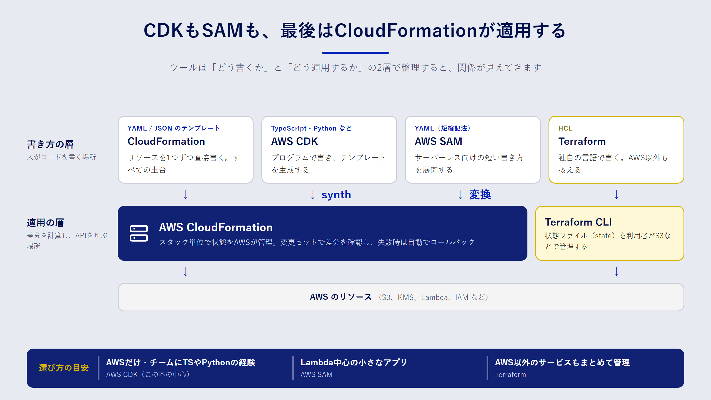

Chapter 03
AWSのIaCツールを見渡す
この章で分かること
- AWS で使われる主な IaC ツール（CloudFormation、AWS CDK、AWS SAM、Terraform）の位置づけ
- ツールどうしの関係、特に「CDK は CloudFormation の上に乗っている」という構造
- チームでツールを選ぶときの判断軸
ツールは「書き方」と「適用のしくみ」に分けて考える
IaC のツールはたくさんあり、最初はどれを選べばよいか迷います。整理のコツは、ツールを次の二つの層に分けて見ることです。
- 書き方の層：インフラの定義を、どんな言語・形式で書くか（YAML、TypeScript、HCL など）
- 適用のしくみの層：書いた定義を、誰がどうやって AWS に反映し、現在の状態をどこで覚えておくか
この二つの層で見ると、AWS 向けの主なツールは次のように並びます。

AWS CloudFormation
CloudFormation は、AWS が提供する IaC のサービスです。YAML か JSON で テンプレート を書き、それを スタック という単位で AWS に適用します。
いちばんの特徴は、適用のしくみが AWS のマネージドサービスとして動く ことです。どのリソースを作ったか、今どんな状態かは CloudFormation が記録します。利用者が状態ファイルを保管する必要はありません。更新が途中で失敗すると、CloudFormation は変更前の状態へ自動で戻します（ロールバック）。
- 書き方：YAML / JSON
- 状態の管理：CloudFormation サービスが管理
- 向いている場面：AWS だけを対象にし、追加のツールを入れずに始めたいとき
AWS CDK
AWS CDK（Cloud Development Kit）は、TypeScript・Python・Java・C#・Go などのプログラミング言語でインフラを定義するフレームワークです。
CDK で書いたコードは、cdk synth を実行すると CloudFormation テンプレートに変換 されます。これを合成（synthesize）と呼びます。実際のデプロイは CloudFormation が行います。つまり CDK は「書き方の層」を置き換えるツールで、「適用のしくみの層」は CloudFormation をそのまま使っています。
プログラミング言語で書けると、次のような利点があります。
- ループや関数を使って、似た構成を繰り返し書かずに済む
bucket.grantRead(role)のように、権限の設定を一行で書ける- 型チェックやエディタの補完が効き、ユニットテストも書ける
一方で、抽象度が高いぶん「最終的にどんな CloudFormation テンプレートになるか」が見えにくくなります。CDK を使うときも、合成されたテンプレートを読める力は欠かせません。この本で CloudFormation を先に学ぶのはそのためです。
AWS SAM
AWS SAM（Serverless Application Model）は、Lambda や API Gateway を中心としたサーバーレスアプリ向けの拡張です。テンプレートの先頭に Transform: AWS::Serverless-2016-10-31 と書くと、AWS::Serverless::Function のような短い記法が使えます。これらはデプロイ時に通常の CloudFormation リソースに展開されます。
SAM CLI には、Lambda 関数をローカルで実行する機能もあります。サーバーレスアプリの開発では、CDK と並ぶ有力な選択肢です。
Terraform
Terraform は HashiCorp 社が開発している IaC ツールです。HCL という独自の言語で書き、AWS 以外のクラウドや SaaS もまとめて管理できます。
CloudFormation との大きな違いは、状態（state）を自分で管理する 点です。Terraform は、作成したリソースの情報を状態ファイルに保存します。チームで使う場合は、この状態ファイルを S3 などの共有ストレージに置き、同時に更新されないようロックをかける必要があります。
比べてみる
四つのツールを並べると、次のようになります。
| 観点 | CloudFormation | AWS CDK | AWS SAM | Terraform |
|---|---|---|---|---|
| 書き方 | YAML / JSON | TypeScript、Python など | YAML / JSON（短縮記法） | HCL |
| 適用のしくみ | CloudFormation | CloudFormation | CloudFormation | Terraform CLI |
| 状態の管理 | AWS が管理 | AWS が管理 | AWS が管理 | 利用者が管理（S3 など） |
| 対象 | AWS | AWS（中心） | AWS のサーバーレス | AWS を含む多数のサービス |
| 抽象化 | 低い（1リソース＝1定義） | 高い（まとめて定義できる） | 中程度 | 低〜中（モジュールで調整） |
どれを選ぶか
ツール選びに唯一の正解はありません。次の問いに順番に答えていくと、候補が絞れます。
- 管理対象は AWS だけか。ほかのクラウドや SaaS も同じ仕組みで管理したいなら、Terraform（または OpenTofu）が有力です。
- チームにプログラミングの経験があるか。アプリ開発者が中心なら CDK の利点を活かせます。インフラ担当者が中心で、コードの抽象化を避けたいなら CloudFormation のテンプレートを直接書くのも合理的です。
- サーバーレス中心か。Lambda と API Gateway が主役で、ローカル実行もしたいなら SAM を検討します。
- 既存の資産は何か。すでに Terraform の資産や運用ノウハウがあるなら、無理に移行する必要はありません。
この本での選択
この本では、CloudFormation と AWS CDK（TypeScript）を使います。理由は三つです。
- AWS だけを対象にするなら、状態の管理を AWS に任せられる CloudFormation 系が始めやすい
- CDK の土台は CloudFormation なので、両方を学ぶと知識がそのままつながる
- 9章で扱う CodePipeline には、CloudFormation の変更セットを作成・実行する機能が組み込まれている
4章で CloudFormation の基本を押さえ、5章で同じことを CDK で書き直す、という順番で進みます。
まとめ
- IaC のツールは、「書き方の層」と「適用のしくみの層」に分けると整理できます。
- CDK と SAM は、どちらも最終的に CloudFormation テンプレートになり、CloudFormation がデプロイします。
- Terraform は独自の適用エンジンと状態ファイルを持ち、AWS 以外も管理できます。
- 選ぶときは、管理対象の範囲、チームのスキル、サーバーレスの比重、既存資産の四点で考えます。
確認問題
問1. 「CDK で書いたインフラは、CloudFormation を使わずにデプロイされる」は正しいですか。
解答
正しくありません。CDK のコードは cdk synth で CloudFormation テンプレートに変換され、デプロイは CloudFormation のスタックとして行われます。そのため、CDK で作ったリソースも CloudFormation のコンソールから確認できます。
問2. Terraform を使うときに、CloudFormation では意識しなくてよかった作業は何ですか。
解答例
状態ファイルの管理です。Terraform は作成したリソースの情報を状態ファイルに保存するため、チームで使うなら S3 などの共有ストレージに置き、同時更新を防ぐロックも用意する必要があります。状態ファイルには機密情報が含まれることもあるので、暗号化とアクセス制御も欠かせません。CloudFormation では、状態の管理をサービス側が担います。